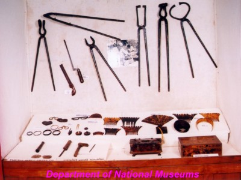
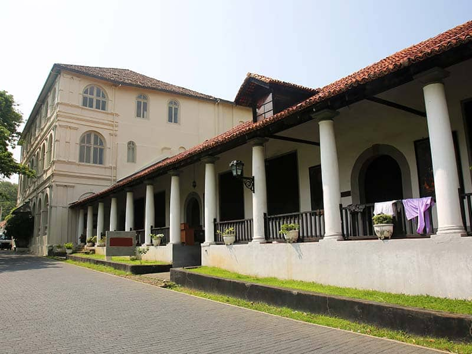
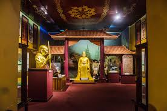
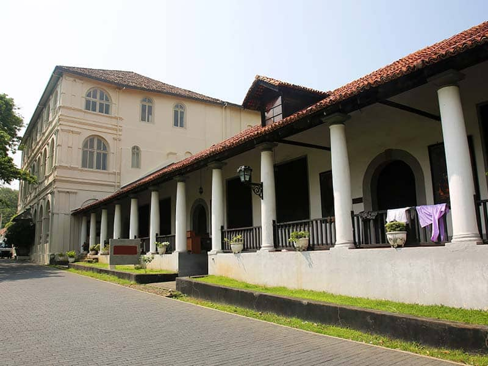
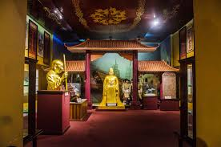
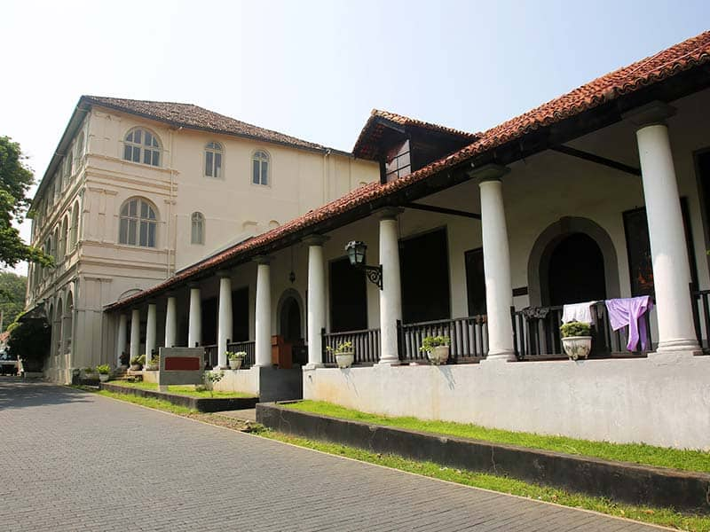
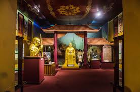

 





The National Museum of Galle
If your life’s passion is driven by the history of the world, then the National Museum of Galle is ‘the’ place for you. It is amongst those tourist places in Galle that allows you to study the times gone by of Sri Lanka from the 4th Century.
Starting from architectural designs, relics and masks, shells, wooden carvings and Beeralu Collection to other archaeological objects that take you into the
deepness of this country is all preserved in this educative building. The influence of the Dutch in Sri Lanka can be witnessed through various items on display like the weapons and vessels.
Location: Church Street
Timings: 09.00 a.m. to 06.00 p.m.
Entry Fee: 35 LKR (USD 0.20) for adults and 20 LKR (USD 0.11) for children
Starting from architectural designs, relics and masks, shells, wooden carvings and Beeralu Collection to other archaeological objects that take you into the
deepness of this country is all preserved in this educative building. The influence of the Dutch in Sri Lanka can be witnessed through various items on display like the weapons and vessels.
Location: Church Street
Timings: 09.00 a.m. to 06.00 p.m.
Entry Fee: 35 LKR (USD 0.20) for adults and 20 LKR (USD 0.11) for children